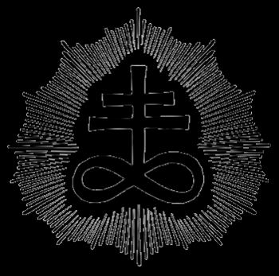

|

Церковь Сатаны (англ. The Church of Satan) — контркультурная группа, основанная в США Антоном ЛаВеем и которая «провозглашает себя сознательным носителем зла и антиподом христианства». Первая официально зарегистрированная организация, заявившая о сатанизме в качестве своей идеологии. Большая энциклопедия «Терра» отмечает, что Церковь Сатаны «хронологически первая из сатанинских сект». При этом нынешний лидер организации Питер Гилмор говорит, что «атеизм первичен, а сатанизм вторичен».
Официальным символом Церкви Сатаны является печать Бафомета.
История:
Церковь Сатаны была основана в Вальпургиеву ночь (30 апреля) 1966 года в Сан-Франциско Антоном Шандором ЛаВеем, впоследствии автором «Сатанинской библии» (1969). 1966 был назван им первым годом сатанинской эры. ЛаВей являлся верховным жрецом Церкви Сатаны до своей смерти (1966—1997).
Из предыстории: в 1950-х годах Антон ЛаВей организовал сообщество Орден Трапезоида, который впоследствии стал управляющим органом Церкви Сатаны. Среди тех, кто участвовал в мероприятиях ЛаВея, были «баронесса» Карин де Плессен, выросшая в королевском дворце в Дании, д-р Сесил Никсон, эксцентричный фокусник и изобретатель, Кеннет Энгер, создатель андеграундных фильмов, Рассел Волден, городской юридический советник, Дональд Уэрби, один из наиболее влиятельных частных собственников Сан-Франциско, антрополог Майкл Харнер, писательница Шана Александер и другие. Также товарищами ЛаВея в тот период времени были писатели в жанрах научной фантастики и ужасов Энтони Бучер, Огуст Дерлет, Роберт Барбор Джонсон, Реджинальд Бретнор, Эмиль Петайа, Стюарт Палмер, Кларк Эштон Смит, Форрест Дж. Экерман и Фриц Лейбер.
1 февраля 1967 Антон ЛаВей провёл церемонию открытой сатанинской свадьбы радикального журналиста Джона Рэймонда и Джудит Кэйс, чем привлёк к Церкви Сатаны значительное внимание со стороны средств массовой информации. Фотографом на церемонии был работавший в «San Francisco Chronicle» Джо Розенталь, автор ставшей знаковой фотографии поднятия флага американскими войсками на горе Сурибати во время Второй мировой войны. Фотографии сатанинской свадьбы были напечатаны в нескольких авторитетных изданиях.
В мае того же года происходит церемония «сатанинского крещения» трёхлетней дочери ЛаВея Зины Галатеи. Журналисты, прибывшие задолго до начала церемонии, были очарованы ангельской улыбкой девочки, которой предстояло быть посвящённой дьяволу. «Сатанинское крещение» было составлено таким образом, чтобы доставить удовольствие ребёнку.
Другим важным событием (декабрь 1967) стало проведение открытых сатанинских похорон члена Церкви Сатаны морского офицера Эдварда Олсона по просьбе его жены, при этом сатанизм был вскоре внесён в реестр официально признаваемых религий США.
В июне 1967 в автокатастрофе погибла Джейн Мэнсфилд, по утверждению ЛаВея, имевшая близкие отношения с ЛаВеем и являвшаяся жрицей Церкви Сатаны. Несмотря на то, что эти утверждения были ложными, бульварная пресса объявила смерть актрисы побочным следствием проклятия, которое ЛаВей, якобы, наслал на партнёра Мэнсфилд Сэма Броди.
Церковь Сатаны упоминалась во многих книгах, журналах и газетах в 1960-х и 1970-х. Также в 1970 вышел полнометражный документальный фильм «Satanis». Антон ЛаВей играл в фильме Кеннета Энгера «Пробуждение моего демонического брата», был техническим консультантом для фильма «Дьявольский дождь» («The Devil’s Rain»), в котором снимались Эрнест Боргнайн, Вильям Шатнер и (впервые) Джон Траволта. Утверждалось также, что ЛаВей неофициально играл роль Дьявола в фильме «Ребёнок Розмари» («Rosemary’s Baby»), однако позже это утверждение было опровергнуто. Церковь Сатаны также фигурировала в фильме Луиджи Скатини «Angeli Blanca, Angeli Negra» (в американском кинопрокате известном как «Witchcraft ‘70»).
В 1975 ЛаВей начал видоизменять систему «гротто» Церкви Сатаны, избавляясь от людей, которые, как он считал, стремились преуспеть в организации лишь ради компенсации своих неудач во внешнем мире. Впоследствии реальный успех в жизни стал одним из критериев для продвижения внутри Церкви Сатаны. В тот же период Антон ЛаВей стал более избирателен при раздаче интервью. Данный переход к «закрытой» деятельности стал причиной слухов о распаде организации и даже о кончине ЛаВея.
В 1980-е прокатилась новая волна массовой истерии, теорий преступного заговора и страха перед сатанизмом, начатая протестантскими фундаменталистами, некоторыми медиками и СМИ. В этот период такие члены Церкви Сатаны, как Питер Гилмор, Пегги Надрамиа, Бойд Райс, Адам Парфрей, Диаболос Рекс и рок-музыкант Кинг Даймонд, активно выступали в средствах массовой информации с опровержениями ложных обвинений в криминальной деятельности Церкви Сатаны, выдвигавшихся христианскими евангелистами. Впоследствии ФБР опубликовало официальный отчёт, опровергающий все теории преступного заговора того периода. Данный социальный феномен получил название «Сатанинской паники».
В 1980-е и 1990-е Церковь Сатаны и её члены весьма активно участвовали в выпуске фильмов, музыки и журналов, посвящённых сатанизму. В качестве наиболее значимых можно отметить издательство Адама Парфри «Feral House», музыку Бойда Райса, фильмы Ника Бугаса (в том числе и документальный фильм «Speak of the Devil: The Canon of Anton LaVey»). Церковь Сатаны и Антон ЛаВей фигурировали во многих журналах и новостных статьях того времени.
В 1997 году после смерти Антона Шандора ЛаВея главой Церкви Сатаны стала Бланш Бартон, его гражданская жена. Хотя и по сей день Бартон участвует в деятельности Церкви Сатаны, в 2001 году она уступила свой пост Питеру Гилмору и Пегги Надрамиа, которые сегодня являются верховными жрецом и жрицей данной организации и издают «The Black Flame» — официальный журнал Церкви Сатаны. Центральный офис Церкви Сатаны также переместился из Сан-Франциско в Нью-Йорк, где они проживают.
|